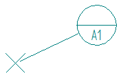
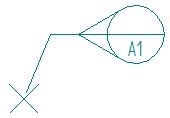
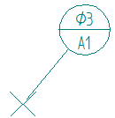
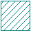

General tab (Datum Target Properties dialog box)
- Target Type
-
Specifies one of the following datum target types.
Target types
Displays
Datum target

Movable datum target

Note:You can drag the break line edit point to flip the movable datum target annotation to the other side.
- Leader
-
- Near-side
-
Displays a solid leader line, to indicate that it is pointing to the near side of the part.
- Far-side
-
Displays a dashed leader line, to indicate that it is pointing to the far side of the part.
- Show datum area size
-
Specifies whether the datum area size is shown in the datum target symbol.

- Reference
-
Specifies the datum feature reference letter. This identifies where the measurement is taken from.
You can reference this information in a feature control frame or other annotation using reference text.
- Number
-
Specifies the datum target number.
You can reference this information in a feature control frame or other annotation using reference text.
- Point type
-
Specifies the datum target point symbol and size.
Datum target point option
Displays
Size
Point
N/A
Circular area
You can use the box to specify the diameter of the circular area.
Rectangular area

You can specify the size of the rectangular area using the X and Y boxes.
How do I
Place a feature control frame or datum frameDefine feature control frame content
Example: Add symbols to a feature control frame
Save a feature control frame
Activate a saved feature control frame
Place a datum target
Learn more
Geometric tolerancingLook up more details
Manipulating feature control framesFeature Control Frame command
Feature Control Frame command bar
Feature Control Frame Properties dialog box
General tab (Feature Control Frame Properties dialog box)
Datum Frame command
Datum Frame command bar
Datum Frame Properties dialog box
General tab (Datum Frame Properties dialog box)
Datum Target command
Datum Target command bar
Datum Target Properties dialog box